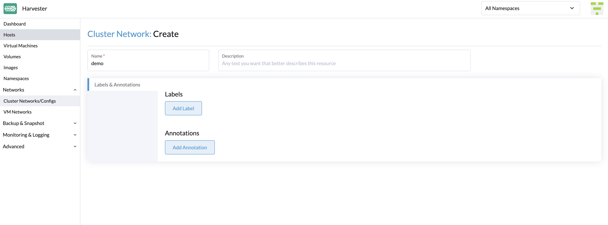

Cluster-Netzwerk
Konzepte
Cluster-Netzwerk
Das folgende Diagramm beschreibt eine typische Netzwerkarchitektur, die den Datenverkehr im Rechenzentrum (DC) vom außerbandigen (OOB) Verkehr trennt.

Wir abstrahieren die Summe der Geräte, Verbindungen und Konfigurationen auf einem verkehrsisolierten Weiterleitungsweg auf SUSE Virtualization als Cluster-Netzwerk.
Im obigen Fall wird es zwei Cluster-Netzwerke geben, die zwei verkehrsisolierte Weiterleitungswege entsprechen.
Netzwerkkonfiguration
Die Spezifikationen einschließlich der Netzwerkgeräte der SUSE Virtualization Hosts können unterschiedlich sein. Um mit einem solchen heterogenen Cluster kompatibel zu sein, haben wir die Netzwerkkonfiguration entworfen.
Die Netzwerkkonfiguration funktioniert nur unter einem bestimmten Cluster-Netzwerk. Jede Netzwerkkonfiguration entspricht einer Gruppe von Hosts mit einheitlichen Netzwerkspezifikationen. Daher sind mehrere Netzwerkkonfigurationen für ein Cluster-Netzwerk auf nicht einheitlichen Hosts erforderlich.
VM-Netzwerk
Ein VM-Netzwerk ist eine Schnittstelle in einer virtuellen Maschine, die mit dem Host-Netzwerk verbunden ist. Wie bei einer Netzwerkkonfiguration muss jedes Netzwerk, außer dem integrierten Management-Netzwerk, unter einem Cluster-Netzwerk stehen.
SUSE Virtualization unterstützt das Hinzufügen mehrerer Netzwerke zu einer VM. Wenn das Cluster-Netzwerk eines Netzwerks auf einigen Hosts nicht aktiviert ist, wird die VM, die dieses Netzwerk besitzt, nicht auf diesen Hosts geplant.
Bitte beziehen Sie sich auf Netzwerkteil für weitere Details zu Netzwerken.
Beziehung zwischen Cluster-Netzwerk, Netzwerkkonfiguration, VM-Netzwerk
Das folgende Diagramm zeigt die Beziehung zwischen einem Cluster-Netzwerk, einer Netzwerkkonfiguration und einem VM-Netzwerk.

Alle Network Configs und VM Networks sind unter einem Cluster-Netzwerk gruppiert.
-
Jeder Host kann ein Label zugewiesen bekommen, um Hosts basierend auf ihren Netzwerkspezifikationen zu kategorisieren.
-
Eine Netzwerkkonfiguration kann für jede Gruppe von Hosts mithilfe eines Knotenselektors hinzugefügt werden.
Zum Beispiel sind in dem obigen Diagramm die Hosts in ClusterNetwork-A in drei Gruppen unterteilt, wie folgt:
-
Die erste Gruppe umfasst host0, das
network-config-Aentspricht. -
Die zweite Gruppe umfasst host1 und host2, die
network-config-Bentsprechen. -
Die dritte Gruppe umfasst die verbleibenden Hosts (host3, host4 und host5), die keine zugehörige Netzwerkkonfiguration haben und daher nicht zu
ClusterNetwork-Agehören.
Das Cluster-Netzwerk ist nur auf Hosts wirksam, die durch die Netzwerkkonfiguration abgedeckt sind. Eine VM, die ein VM network unter einem bestimmten Cluster-Netzwerk verwendet, kann nur auf einem Host geplant werden, auf dem das Cluster-Netzwerk aktiv ist.
In dem obigen Diagramm können wir sehen, dass:
-
ClusterNetwork-Aist aktiv auf host0, host1 und host2.VM0verwendetVM-network-A, sodass es auf jedem dieser Hosts geplant werden kann. -
VM1verwendet sowohlVM-network-Bals auchVM-network-C, sodass es nur auf host2 geplant werden kann, wo sowohlClusterNetwork-Aals auchClusterNetwork-Baktiv sind. -
VM0,VM1undVM2können nicht auf host3 ausgeführt werden, wo die beiden Cluster-Netzwerke inaktiv sind.
Insgesamt bietet dieses Diagramm eine klare Visualisierung der Beziehung zwischen Cluster-Netzwerken, Netzwerkkonfigurationen und VM-Netzwerken sowie, wie sie die VM-Planung auf Hosts beeinflussen.
Details zum Cluster-Netzwerk
Cluster-Netzwerke sind verkehrsisolierte Weiterleitungswege für die Übertragung von Netzwerkverkehr innerhalb eines SUSE Virtualization-Clusters.
Ein Cluster-Netzwerk namens mgmt wird automatisch erstellt, wenn ein SUSE Virtualization-Cluster bereitgestellt wird. Sie können auch benutzerdefinierte Cluster-Netzwerke erstellen, die dem Verkehr von virtuellen Maschinen gewidmet sind.
Integriertes Cluster-Netzwerk
Wenn ein SUSE Virtualization-Cluster bereitgestellt wird, wird automatisch ein Cluster-Netzwerk mit dem Namen mgmt für die intra-cluster Kommunikation erstellt. mgmt besteht aus demselben Bridge, Bonding und NICs wie das externe Infrastruktur-Netzwerk, an das jeder SUSE Virtualization-Host mit Management-NICs angeschlossen ist. Aufgrund dieses Designs ermöglicht mgmt auch den Zugriff auf virtuelle Maschinen aus dem externen Infrastruktur-Netzwerk zu Verwaltungszwecken des Clusters.
mgmt erfordert keine Netzwerkkonfiguration und ist auf allen Hosts immer aktiviert. Sie können mgmt nicht deaktivieren und löschen.
|
In SUSE Virtualization v1.5.x und früheren Versionen wurde der gesamte VLAN-ID-Bereich (2 bis 4094) den Für weitere Informationen siehe Problem #7650. |
Beginnend mit v1.6.0 wird nur die während der Installation angegebene primäre VLAN-ID automatisch zur mgmt-br-Brücke und zur mgmt-bo-Schnittstelle hinzugefügt. Sie können sekundäre VLAN-Schnittstellen hinzufügen, nachdem die Installation abgeschlossen ist.
Während der Installation des ersten Clusterknotens können Sie den MTU-Wert für mgmt mit der Einstellung install.management_interface konfigurieren. Der Standardwert des Feldes mtu beträgt 1500, was mgmt typischerweise verwendet. Wenn Sie jedoch einen MTU-Wert angeben, der von 0 oder 1500 abweicht, müssen Sie eine entsprechende Annotation hinzufügen, nachdem der Cluster bereitgestellt wurde.
|
Sekundäre VLAN-Schnittstellen hinzufügen
-
Überprüfen Sie die aktuellen VLAN-Einstellungen für die
bond-mgmtundbridge-mgmt-Verbindungsprofile.Beispiel (wo die primäre VLAN-ID 2017 ist):
$ nmcli -f bridge-port.vlans con show bond-mgmt bridge-port.vlans: 1 pvid untagged, 2017 $ nmcli -f bridge.vlans con show bridge-mgmt bridge.vlans: 2017 -
Aktualisieren Sie die
bond-mgmtundbridge-mgmt-Verbindungsprofile, um die sekundäre VLAN-ID hinzuzufügen.Beispiel (wobei die primäre VLAN-ID 2017 und die sekundäre VLAN-ID 2018 sind):
$ nmcli con modify bond-mgmt bridge-port.vlans '1 pvid untagged, 2017, 2018' $ nmcli con modify bridge-mgmt bridge.vlans 2017,2018 -
Starten Sie jeden Knoten neu, um die Änderung anzuwenden.
Annotieren Sie einen Nicht-Standard-MTU-Wert für mgmt nach der Installation.
Wenn Sie einen anderen Wert als 0 oder 1500 im mtu Feld der install.management_interface Einstellung angegeben haben, müssen Sie diesen Wert dem mgmt clusternetwork Objekt annotieren. Ohne die Annotation übernehmen alle erstellten VM-Netzwerke nicht automatisch den von Ihnen angegebenen MTU-Wert, sondern verwenden den Standard-MTU-Wert 1500.
Beispiel
$ kubectl annotate clusternetwork mgmt network.harvesterhci.io/uplink-mtu="9000"
|
Sie müssen Folgendes sicherstellen:
|
Ändern Sie den MTU-Wert von mgmt nach der Installation.
-
Beenden Sie alle virtuellen Maschinen, die mit dem
mgmtNetzwerk verbunden sind. -
(Optional) Deaktivieren Sie das Speichernetzwerk, wenn es
mgmtverwendet und aktiviert ist. -
Ändern Sie den MTU-Wert für die
bond-mgmt,bridge-mgmtund dievlan-mgmt-Verbindungsprofile (wenn Sie ein VLAN verwenden).Beispiel:
$ nmcli con modify bond-mgmt 802-3-ethernet.mtu 9000 $ nmcli con modify bridge-mgmt 802-3-ethernet.mtu 9000 $ nmcli con modify vlan-mgmt 802-3-ethernet.mtu 9000 $ nmcli device reapply mgmt-bo $ nmcli device reapply mgmt-br -
Überprüfen Sie die MTU-Werte mit dem
ip linkBefehl. -
Annotieren Sie das
mgmtclusternetworkObjekt mit dem neuen MTU-Wert.Beispiel:
$ kubectl annotate clusternetwork mgmt network.harvesterhci.io/uplink-mtu="9000"Alle VM-Netzwerke, die mit
mgmtverbunden sind, erben automatisch den neuen MTU-Wert. -
(Optional) Aktivieren Sie das Speichernetzwerk, das Sie vor der Änderung des MTU-Werts deaktiviert haben.
-
Starten Sie alle virtuellen Maschinen, die mit
mgmtverbunden sind. -
Überprüfen Sie, ob die Arbeitslasten der virtuellen Maschinen normal laufen.
Weitere Informationen finden Sie in [Change the MTU of a network configuration with an attached storage network].
Benutzerdefiniertes Cluster-Netzwerk
Wenn mehr als eine Netzwerkschnittstelle an jeden Host angeschlossen ist, können Sie benutzerdefinierte Cluster-Netzwerke für eine bessere Verkehrsisolierung erstellen. Jedes Cluster-Netzwerk muss mindestens eine Netzwerkkonfiguration mit einem definierten Geltungsbereich und Bonding-Modus haben.
|
Der witness node ist im Allgemeinen nicht am benutzerdefinierten Cluster-Netzwerk beteiligt. |
Konfiguration
Erstellen Sie ein neues Cluster-Netzwerk
|
Um die Clusterwartung zu vereinfachen, erstellen Sie eine Netzwerkkonfiguration für jeden Knoten oder jede Gruppe von Knoten. Ohne dedizierte Netzwerkkonfigurationen erfordern bestimmte Wartungsaufgaben (zum Beispiel den Austausch alter NICs gegen NICs in anderen Slots), dass Sie die betroffenen virtuellen Maschinen beenden und/oder migrieren, bevor Sie die Netzwerkkonfiguration aktualisieren. |
-
Stellen Sie sicher, dass die Hardwareanforderungen erfüllt sind.
-
Gehen Sie zu Netzwerke → Clusternetzwerke/Konfiguration und klicken Sie dann auf Erstellen.
-
Geben Sie einen Namen für das Cluster-Netzwerk an.

-
Klicken Sie auf dem Bildschirm Clusternetzwerke/Konfiguration auf die Schaltfläche Netzwerkkonfiguration erstellen des von Ihnen erstellten Cluster-Netzwerks.

-
Geben Sie auf dem Bildschirm Netzwerkkonfiguration:Erstellen einen Namen für die Konfiguration an.
-
Wählen Sie auf der Registerkarte Node Selector die Methode zur Definition des Geltungsbereichs dieser spezifischen Netzwerkkonfiguration aus.

-
Die Methode Alle Knoten auswählen funktioniert nur, wenn alle Knoten die exakt gleichen dedizierten NICs für dieses spezifische benutzerdefinierte Cluster-Netzwerk verwenden. In anderen Situationen (zum Beispiel, wenn der Cluster einen witness node hat), müssen Sie eine der verbleibenden Methoden auswählen.
-
Wenn Sie möchten, dass die Konfiguration auf Knoten angewendet wird, die nicht von der ausgewählten Methode abgedeckt sind, müssen Sie eine weitere Netzwerkkonfiguration erstellen.
-
-
Konfigurieren Sie auf der Registerkarte Uplink die folgenden Einstellungen:
-
NICs: Die Liste enthält NICs, die für alle ausgewählten Knoten üblich sind. NICs, die nicht ausgewählt werden können, sind auf einem oder mehreren Knoten nicht verfügbar und müssen konfiguriert werden. Sobald die Fehlersuche abgeschlossen ist, aktualisieren Sie den Bildschirm und überprüfen Sie, ob die NICs ausgewählt werden können.
-
Bond-Optionen: Der Standard-Bonding-Modus ist
active-backup. -
Attribute: Sie müssen die gleiche MTU in allen Netzwerkkonfigurationen eines benutzerdefinierten Cluster-Netzwerks verwenden. Wenn Sie keine MTU angeben, wird der Standardwert
1500verwendet. Der SUSE Virtualization Webhook lehnt eine neue Netzwerkkonfiguration ab, wenn ihre MTU nicht mit der MTU der vorhandenen Netzwerkkonfigurationen übereinstimmt.
Physische Switches, die mit gebondeten Schnittstellen verbunden sind, müssen als Trunk-Ports konfiguriert werden. Diese Ports müssen getaggten Datenverkehr akzeptieren und Datenverkehr senden, der mit der VLAN-ID getaggt ist, die vom VM-Netzwerk verwendet wird.
-
-
Klicken Sie auf Speichern.
Ändern Sie eine Netzwerkkonfiguration
Änderungen an bestehenden Netzwerkkonfigurationen können SUSE Virtualization virtuelle Maschinen und Workloads sowie externe Geräte wie Switches und Router betreffen. Für weitere Informationen siehe Netzwerktopologie.
|
Sie müssen alle betroffenen virtuellen Maschinen stoppen, bevor Sie eine Netzwerkkonfiguration ändern. |
Die folgenden Abschnitte skizzieren die Schritte, die Sie ausführen müssen, um die MTU einer Netzwerkkonfiguration zu ändern. Das Beispiel-Cluster-Netzwerk, das in diesen Abschnitten verwendet wird, hat cn-data, das mit einem MTU-Wert von 1500 erstellt wurde und auf 9000 geändert werden soll.

Allgemeine Änderungen
-
Lokalisieren Sie das Ziel-Cluster-Netzwerk und die Netzwerkkonfiguration.
Im folgenden Beispiel ist das Cluster-Netzwerk
cn-dataund die Netzwerkkonfiguration istnc-1.
-
Wählen Sie ⋮ → Konfiguration bearbeiten und ändern Sie dann die relevanten Felder.
-
Knoten-Selektor Tab:

-
Uplink Tab:

Sie müssen die gleichen Werte für die Felder Bond-Optionen und Attribute in allen Netzwerkkonfigurationen eines benutzerdefinierten Cluster-Netzwerks verwenden.
-
-
Klicken Sie auf Speichern.
Ändern Sie die MTU einer Netzwerkkonfiguration ohne angeschlossenes Speichernetzwerk
In diesem Szenario ist die Speichernetzwerk-Einstellung weder aktiviert noch mit dem Ziel-Cluster-Netzwerk verbunden.
|
Wenn Sie die MTU ändern müssen, führen Sie die folgenden Schritte aus:
-
Beenden Sie alle virtuellen Maschinen, die mit dem Ziel-Cluster-Netzwerk verbunden sind.
Sie können dies mit dem Netzwerk der virtuellen Maschine und allen sekundären Netzwerken, die Sie möglicherweise verwendet haben, überprüfen. Ändern Sie die MTU nicht, während eine der verbundenen virtuellen Maschinen noch läuft.
-
Überprüfen Sie die Netzwerkkonfigurationen des Ziel-Cluster-Netzwerks.
Wenn mehrere Netzwerkkonfigurationen vorhanden sind, notieren Sie den Knoten-Selektor für jede und entfernen Sie Konfigurationen, bis nur noch eine übrig bleibt.
-
Ändern Sie die MTU der verbleibenden Netzwerkkonfiguration.
Sie müssen auch die MTU am externen Switch oder Router des Peers ändern.
-
Überprüfen Sie, ob die MTU mit dem Linux
ip linkBefehl geändert wurde.Wenn die Netzwerkkonfiguration mehrere SUSE Virtualization Knoten auswählt, führen Sie den Befehl auf jedem Knoten aus.
Die Ausgabe muss die neue MTU des betreffenden
*-brGeräts und den ZustandUPanzeigen. Im folgenden Beispiel ist das Gerätcn-data-brund die neue MTU ist9000.Harvester node $ ip link show dev cn-data-br |new MTU| |state UP| 3: cn-data-br: <BROADCAST,MULTICAST,UP,LOWER_UP> mtu 9000 qdisc noqueue state UP mode DEFAULT group default qlen 1000 link/ether 52:54:00:6e:5c:2a brd ff:ff:ff:ff:ff:ffWenn der Zustand
UNKNOWNist, ist es wahrscheinlich, dass die MTU-Werte auf SUSE Virtualization und dem externen Switch oder Router nicht übereinstimmen. -
Testen Sie die neue MTU auf SUSE Virtualization Knoten mit Befehlen wie
ping.Sie müssen die Nachrichten an einen SUSE Virtualization Knoten mit der neuen MTU oder an einen Knoten mit einer externen IP senden.
Im folgenden Beispiel ist das Netzwerk
cn-data, die CIDR ist192.168.100.0/24und das Gateway ist192.168.100.1.-
Setzen Sie die IP
192.168.100.100auf dem Bridge-Gerät.$ ip addr add dev cn-data-br 192.168.100.100/24 -
Fügen Sie eine Route für die Ziel-IP (zum Beispiel
8.8.8.8) über das Gateway hinzu.$ ip route add 8.8.8.8 via 192.168.100.1 dev cn-data-br -
Pingen Sie die Ziel-IP von der neuen IP
192.168.100.100an.$ ping 8.8.8.8 -I 192.168.100.100 PING 8.8.8.8 (8.8.8.8) from 192.168.100.100 : 56(84) bytes of data. 64 bytes from 8.8.8.8: icmp_seq=1 ttl=59 time=8.52 ms 64 bytes from 8.8.8.8: icmp_seq=2 ttl=59 time=8.90 ms ... -
Pingen Sie die Ziel-IP mit einer anderen Paketgröße an, um die neue MTU zu validieren.
$ ping 8.8.8.8 -s 8800 -I 192.168.100.100 PING 8.8.8.8 (8.8.8.8) from 192.168.100.100 : 8800(8828) bytes of data The param `-s` specify the ping packet size, which can test if the new MTU really works -
Entfernen Sie die Route, die Sie für den Test verwendet haben.
$ ip route delete 8.8.8.8 via 192.168.100.1 dev cn-data-br -
Entfernen Sie die IP, die Sie für den Test verwendet haben.
$ ip addr delete 192.168.100.100/24 dev cn-data-br
-
-
Fügen Sie die entfernten Netzwerkkonfigurationen wieder hinzu.
Sie müssen die MTU in jeder Netzwerkkonfiguration ändern und überprüfen, ob die neue MTU angewendet wurde. Der SUSE Virtualization Webhook lehnt eine neue Netzwerkkonfiguration ab, wenn ihre MTU nicht mit der MTU der bestehenden Netzwerkkonfigurationen übereinstimmt.
Alle VM-Netzwerke, die mit dem Ziel-Cluster-Netzwerk verbunden sind, erben automatisch den neuen MTU-Wert.
Im folgenden Beispiel lautet der Netzwerkname vm100. Führen Sie den Befehl kubectl get NetworkAttachmentDefinition.k8s.cni.cncf.io vm100 -oyaml aus, um zu überprüfen, ob der MTU-Wert aktualisiert wurde:
+
apiVersion: k8s.cni.cncf.io/v1
kind: NetworkAttachmentDefinition
metadata:
annotations:
network.harvesterhci.io/route: '{"mode":"auto","serverIPAddr":"","cidr":"","gateway":""}'
creationTimestamp: '2025-04-25T10:21:01Z'
finalizers:
- wrangler.cattle.io/harvester-network-nad-controller
- wrangler.cattle.io/harvester-network-manager-nad-controller
generation: 1
labels:
network.harvesterhci.io/clusternetwork: cn-data
network.harvesterhci.io/ready: 'true'
network.harvesterhci.io/type: L2VlanNetwork
network.harvesterhci.io/vlan-id: '100'
name: vm100
namespace: default
resourceVersion: '1525839'
uid: 8dacf415-ce90-414a-a11b-48f041d46b42
spec:
config: >-
{"cniVersion":"0.3.1","name":"vm100","type":"bridge","bridge":"cn-data-br","promiscMode":true,"vlan":100,"ipam":{},"mtu":9000} // MTU has been updated-
Starten Sie alle virtuellen Maschinen, die mit dem Ziel-Cluster-Netzwerk verbunden sind.
Die virtuellen Maschinen sollten den neuen MTU-Wert übernommen haben. Sie können dies im Gastbetriebssystem mit den Befehlen
ip linkundping 8.8.8.8 -s 8800überprüfen. -
Überprüfen Sie, ob die Arbeitslasten der virtuellen Maschinen normal laufen.
|
SUSE Virtualization kann nicht für Schäden oder Datenverluste verantwortlich gemacht werden, die auftreten können, wenn der MTU-Wert geändert wird. |
Ändern Sie den MTU-Wert einer Netzwerkkonfiguration mit einem angeschlossenen Speichernetzwerk.
In diesem Szenario ist die Speichernetzwerk-Einstellung aktiviert und mit dem Ziel-Cluster-Netzwerk verbunden.
Das Speichernetzwerk wird von driver.longhorn.io verwendet, das der Standard-CSI-Treiber von SUSE Virtualization ist. SUSE Storage ist verantwortlich für die Bereitstellung von Root-Volumes, sodass die Änderung des MTU-Werts alle virtuellen Maschinen betrifft.
|
Wenn Sie die MTU ändern müssen, führen Sie die folgenden Schritte aus:
-
Beenden Sie alle virtuellen Maschinen.
-
Deaktivieren Sie die Speichernetzwerkeinstellung.
Lassen Sie etwas Zeit, damit die Einstellung deaktiviert wird, und überprüfen Sie dann, ob die Änderung angewendet wurde.
-
Überprüfen Sie die Netzwerkkonfigurationen des Ziel-Cluster-Netzwerks.
Wenn mehrere Netzwerkkonfigurationen vorhanden sind, notieren Sie den Knoten-Selektor für jede und entfernen Sie Konfigurationen, bis nur noch eine übrig bleibt.
-
Ändern Sie die MTU der verbleibenden Netzwerkkonfiguration.
Sie müssen auch die MTU am externen Switch oder Router des Peers ändern.
-
Überprüfen Sie, ob die MTU mit dem Befehl
ip linkgeändert wurde.Wenn die Netzwerkkonfiguration mehrere SUSE Virtualization Knoten auswählt, führen Sie den Befehl auf jedem Knoten aus.
Die Ausgabe muss die neue MTU des betreffenden
*-brGeräts und den ZustandUPanzeigen. Im folgenden Beispiel ist das Gerätcn-data-brund die neue MTU ist9000.Harvester node $ ip link show dev cn-data-br |new MTU| |state UP| 3: cn-data-br: <BROADCAST,MULTICAST,UP,LOWER_UP> mtu 9000 qdisc noqueue state UP mode DEFAULT group default qlen 1000 link/ether 52:54:00:6e:5c:2a brd ff:ff:ff:ff:ff:ffWenn der Zustand
UNKNOWNist, ist es wahrscheinlich, dass die MTU-Werte auf SUSE Virtualization und dem externen Switch oder Router nicht übereinstimmen. -
Testen Sie die neue MTU auf SUSE Virtualization Knoten mit Befehlen wie
ping.Sie müssen die Nachrichten an einen SUSE Virtualization Knoten mit dem neuen MTU oder an einen Knoten mit einer externen IP senden.
Im folgenden Beispiel ist das Netzwerk
cn-data, die CIDR ist192.168.100.0/24und das Gateway ist192.168.100.1.-
Setzen Sie die IP
192.168.100.100auf dem Bridge-Gerät.$ ip addr add dev cn-data-br 192.168.100.100/24 -
Fügen Sie eine Route für die Ziel-IP (zum Beispiel
8.8.8.8) über das Gateway hinzu.$ ip route add 8.8.8.8 via 192.168.100.1 dev cn-data-br -
Pingen Sie die Ziel-IP von der neuen IP
192.168.100.100an.$ ping 8.8.8.8 -I 192.168.100.100 PING 8.8.8.8 (8.8.8.8) from 192.168.100.100 : 56(84) bytes of data. 64 bytes from 8.8.8.8: icmp_seq=1 ttl=59 time=8.52 ms 64 bytes from 8.8.8.8: icmp_seq=2 ttl=59 time=8.90 ms ... -
Pingen Sie die Ziel-IP mit einer anderen Paketgröße an, um die neue MTU zu validieren.
$ ping 8.8.8.8 -s 8800 -I 192.168.100.100 PING 8.8.8.8 (8.8.8.8) from 192.168.100.100 : 8800(8828) bytes of data The param `-s` specify the ping packet size, which can test if the new MTU really works -
Entfernen Sie die Route, die Sie für den Test verwendet haben.
$ ip route delete 8.8.8.8 via 192.168.100.1 dev cn-data-br -
Entfernen Sie die IP, die Sie für den Test verwendet haben.
$ ip addr delete 192.168.100.100/24 dev cn-data-br
-
-
Fügen Sie die Netzwerkkonfigurationen, die Sie entfernt haben, wieder hinzu.
Sie müssen die MTU in jeder Netzwerkkonfiguration ändern und überprüfen, ob die neue MTU angewendet wurde. Der SUSE Virtualization Webhook lehnt eine neue Netzwerkkonfiguration ab, wenn ihre MTU nicht mit der MTU der bestehenden Netzwerkkonfigurationen übereinstimmt.
-
Aktivieren und konfigurieren Sie die Speichernetzwerkeinstellung, und stellen Sie sicher, dass die Voraussetzungen erfüllt sind.
-
Lassen Sie etwas Zeit, damit die Einstellung aktiviert wird, und überprüfen Sie dann, ob die Änderung angewendet wurde. Der
storagenetworkläuft mit dem neuen MTU-Wert.
Alle VM-Netzwerke, die mit dem Ziel-Cluster-Netzwerk verbunden sind, erben automatisch den neuen MTU-Wert.
+
Im folgenden Beispiel lautet der Netzwerkname vm100. Führen Sie den Befehl kubectl get NetworkAttachmentDefinition.k8s.cni.cncf.io vm100 -oyaml aus, um zu überprüfen, ob der MTU-Wert aktualisiert wurde.
+
apiVersion: k8s.cni.cncf.io/v1
kind: NetworkAttachmentDefinition +
metadata: +
annotations: +
network.harvesterhci.io/route: '{"mode":"auto","serverIPAddr":"","cidr":"","gateway":""}' +
creationTimestamp: '2025-04-25T10:21:01Z'
finalizers:
- wrangler.cattle.io/harvester-network-nad-controller
- wrangler.cattle.io/harvester-network-manager-nad-controller
generation: 1
labels:
network.harvesterhci.io/clusternetwork: cn-data
network.harvesterhci.io/ready: 'true'
network.harvesterhci.io/type: L2VlanNetwork
network.harvesterhci.io/vlan-id: '100'
name: vm100
namespace: default
resourceVersion: '1525839'
uid: 8dacf415-ce90-414a-a11b-48f041d46b42
spec:
config: >-
{"cniVersion":"0.3.1","name":"vm100","type":"bridge","bridge":"cn-data-br","promiscMode":true,"vlan":100,"ipam":{},"mtu":9000} // MTU wurde aktualisiert
-
Starten Sie alle virtuellen Maschinen, die mit dem Ziel-Cluster-Netzwerk verbunden sind.
Die virtuellen Maschinen sollten den neuen MTU-Wert übernommen haben. Sie können dies im Gastbetriebssystem mit dem Linux
ip linkBefehl und demping 8.8.8.8 -s 8800Befehl überprüfen. -
Überprüfen Sie, ob die Arbeitslasten der virtuellen Maschinen normal laufen.
|
SUSE Virtualization kann nicht für Schäden oder Datenverluste verantwortlich gemacht werden, die auftreten können, wenn der MTU-Wert geändert wird. |